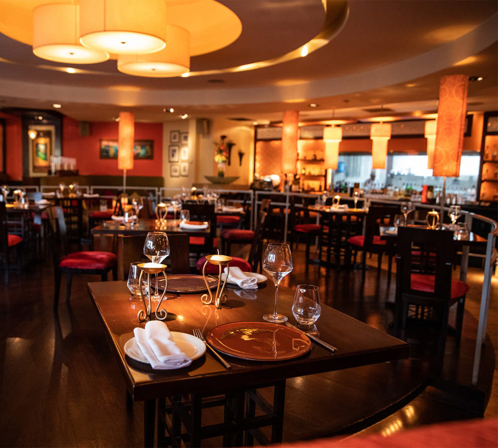

The Restaurant Management System in C is a console-based application designed to streamline the management operations of a restaurant. Developed using the C programming language, this system provides a robust solution for managing various aspects of restaurant operations efficiently.
Key Features
Menu Management
Order Management
Customer Management
Billing and Payment
Reporting and Analytics